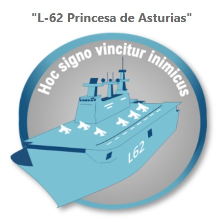
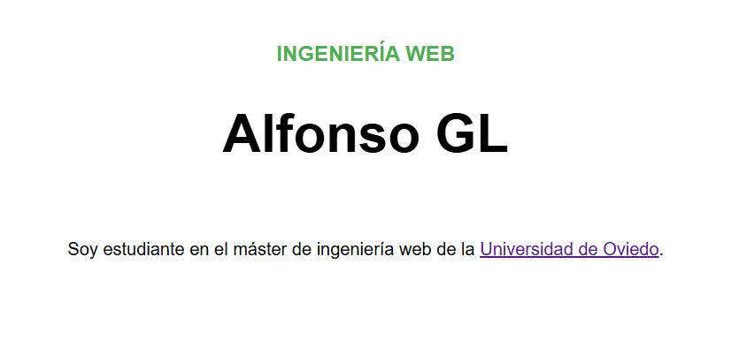
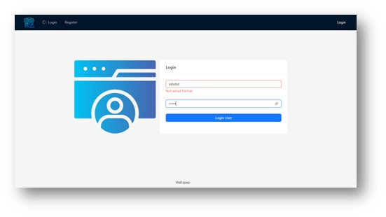
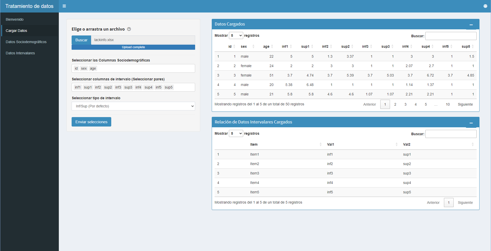

Mis Proyectos
En esta sección te presento algunos de los proyectos en los que he trabajado. Puedes explorar cada proyecto en GitHub.
-

Administración Segura de Servidores Web - ASSW
En esta asignatura estudiamos el despliegue y administración de servidores web seguros, así como tecnologías de automatización de infraestructuras y escalabilidad en la web.
-

Estándares y Computación Web - ECW
En esta asignatura estudiamos el diseño con estándares web y tecnologías XML. Esta página forma parte de las tareas de la asignatura.
-
Arquitectura de sitios web - ASW
Esta asignatura estudia los principales patrones arquitectónicos, sus ventajas, inconvenientes y escenarios adecuados, para así poder seleccionar el diseño más adecuado para cada proyecto.
-

Diseño y programación de Interfaces de Usuario - DPIU
En esta asignatura estudiamos los principales aspectos de usabilidad, así como la programación de aplicaciones web, en ella implementamos una pequeña tienda online.
-

Trabajo Fin de Grado - TFG
Mi TFG: Herramienta web interactiva para el tratamiento estadístico de datos de valoración intervalar. Consiste en el desarrollo de una plataforma para analizar y visualizar datos de intervalos. Los datos de intervalo se obtienen principalmente de cuestionarios, son especialmente útiles a la hora de analizar percepciones y sentimientos.